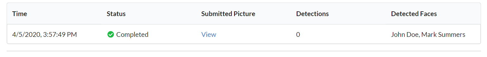

<!-- Start feature Area -->
<section class="feature-area pb-10 mt-100" id="service">
  <div class="container">
    <h1>How to use FaceQuest?</h1>
    <br/>
    <div>
      <h3>1. Add a Reference Face</h3>
      <p>Just type the name of the face you want to add and click on "Create" button.<br /><br />
        
        <br />&nbsp;</p>
    </div>
    <div>
      <h3>2. Upload Photo for Reference Face</h3>
      <p><br />
        
        <br />
        You can continue adding more faces, if you wish.<br /><br />
        
      </p>
    </div>
    <div>
      <h3>3. Recognize Faces by Running Quests</h3>
      <p><br />
        Go to 'Quests' page and upload the picture, in which you want to find people.<br /><br />
        </p>
    </div>
    <div>
      <h3>4. View Detected Faces</h3>
      <p>Once the quest is complete, you will see the detected faces.<br />
        
    </div>
    <div>
      Try your first quest and let us know your experience.&nbsp; We will be happy to assist you in your quest!</p>
    </div>

    <div>
      <h3>Automate Quests using APIs</h3>
      <br/>
      <p>If you are an API person, you can use FaceQuest APIs to run automated quests.</p>
      <div class="mt-10">
        <a href="https://app.facequest.io/api-docs" target="_blank" class="genric-btn primary radius">View API Docs</a>
      </div>
    </div>
  </div>
</section>
